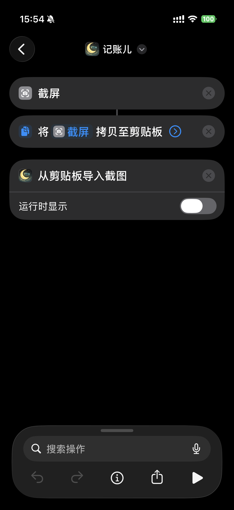
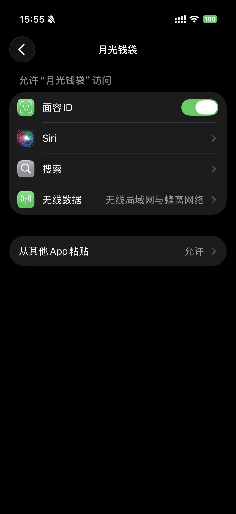

用快捷指令把支付截图导入 App，完成识别、确认和保存。当前推荐流程固定为以下 3 步。
按下图添加 3 个动作：`截屏`、`将截屏拷贝至剪贴板`、`从剪贴板导入截图`。建议关闭“运行时显示”，这样导入会更顺。

第一次运行时，请在系统设置里把“从其他 App 粘贴”设为“允许”。MoonPocket 只会在你主动运行快捷指令导入截图时读取剪贴板中的截图内容，不会持续监听，也不会在后台反复读取。

如需启用 AI 识别，请前往 platform.deepseek.com 注册账号并创建 API Key，然后回到 App 的“设置 → AI 识别”中填入。未配置 API Key 时，App 仍可继续使用本地 OCR 识别。
Use Shortcuts to send a payment screenshot into the app, then review and save the result. The recommended flow is the following 3-step setup.
Add these 3 actions as shown below: Take Screenshot, Copy Screenshot to Clipboard, and Import Screenshot from Clipboard. It is recommended to turn off “Show When Run” so the import feels smoother.
When you run the shortcut for the first time, set “Paste from Other Apps” to “Allow” in iOS settings. MoonPocket reads the clipboard only when you actively run the shortcut to import a screenshot. It does not keep listening or repeatedly read clipboard contents in the background.
To enable AI recognition, visit platform.deepseek.com, create an account, generate an API Key, and then paste it into “Settings → AI 识别” inside the app. If no API Key is configured, the app can still continue with local OCR recognition.